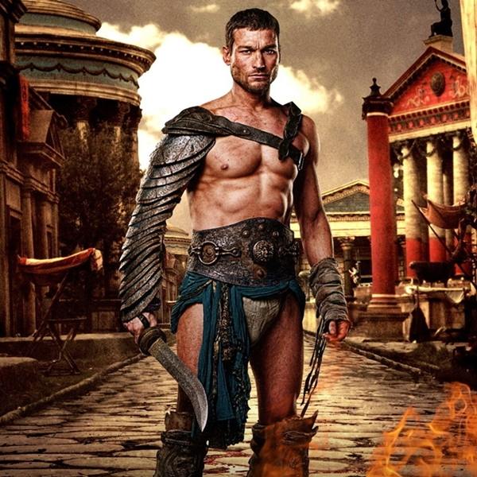

S É R I E S - M A N I A
|  | GÊNERO | Ação |
|---|---|---|
| STATUS | Cancelada | |
| ESTRÉIA | BRA 07/08/2010 | |
| EUA 22/01/2010 |
Spartacus: Blood and Sand (Spartacus: Sangue e Areia no DVD eSpartacus: Viva o Pecado2 no FX Brasil (título no Brasil) ou Spartacus, Sangue e Arena (título em Portugal)) é uma série da Starz (produtora de Party Down) estreado em Janeiro de 2010, no Brasil é exibida pelo canal Globosat HD. A série é focada em Spartacus, o famoso escravo que se tornougladiador e liderou a mais célebre revolução da Roma Antiga. Sua história foi narrada em diversos livros, filmes, jogos e foi imortalizada pelo cineastaStanley Kubrick em seu filme estrelado por Kirk Douglas. Agora, é a vez dos produtores Joshua Donen e Sam Raimi (diretor da trilogia Homem Aranha) contarem a jornada do ícone histórico na série Spartacus: Blood and Sand.